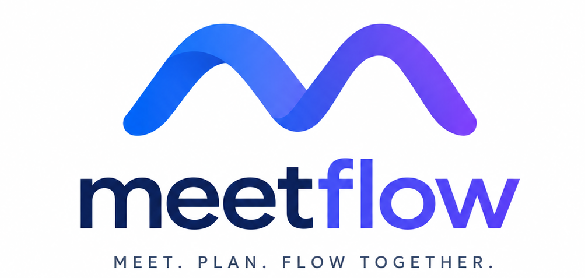

여러 회의를 하나로 잇는 프로젝트 AI
회의가 쌓일수록
프로젝트가 선명해져요
서기 없이 회의록이 정리되는 건 기본이에요.
지난 회의에서 못 끝낸 일을 이번 회의에 자동으로 이어 붙여,
지금 우리가 어디까지 왔는지 되짚지 않아도 되게 해드려요.
meetflow-ai.app/dashboard
2
2차 회의
✅ 백엔드 API 문서화
⏳ 경쟁사 분석 — 이어짐
3
3차 회의최신
🔄 발표 슬라이드 디자인
📅 QA 테스트 시나리오
회의 한 건이 아니라, 프로젝트 전체를 봅니다
기존 AI 회의록은 회의 하나를 잘 남기는 데서 멈춰요. MeetFlow는 회의를 이어 붙입니다.
🔗
회의를 이어서 관리
지난 회의에서 못 끝낸 일을 이번 회의 분석에 자동으로 반영해요. 빠진 부분과 추가로 해야 할 일까지 짚어드려요.
👥
팀원별 누적 이력
누가 지금까지 무엇을 맡아왔는지 회차를 넘어 누적해서 보여줘요. 기여도와 공백이 한눈에 드러나요.
🎙️
서기 없는 회의록
녹음하거나 텍스트를 붙여넣으면 끝. AI가 받아쓰고 담당자·업무·마감일까지 뽑아내요.
🚀
자료 기반 프로젝트 설계
강의계획서·모집요강을 분석해 목표와 필요 산출물을 도출하고, 역할 분담과 마일스톤, 첫 회의 아젠다까지 설계합니다.
🔍
관련 자료 자동 추천
회의 안건에 맞는 외부 자료를 찾아 붙여줘요. 회의가 거듭될수록 팀의 지식도 함께 쌓여요.
📝
프로젝트 경험 아카이빙
프로젝트가 끝나면 팀원별 기여와 성과를 정리해 문서로 남깁니다. 포트폴리오·자기소개서에 그대로 활용할 수 있습니다.
연동 서비스
📹 Google Meet
📄 Google Docs
📅 Google Calendar
✨ Gemini AI
지금 바로 시작해 보세요
구글 계정만 있으면 별도 설정 없이
무료로 모든 기능을 사용할 수 있어요